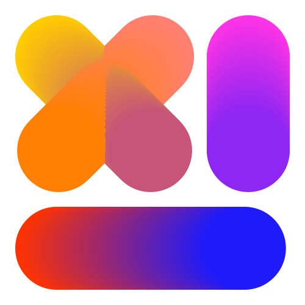

A RoboFont extension to create and edit designspaces format 4 and 5. For a specification of the designspace 5 format go to the designspace specification at the FontTools repository .
This extension can:

wght axis from 400 to 700. (obviously you can edit these values here)wdth axis from 100 to 50opsz axis, from 10 to 16.
|
Double click the icon to get the popover editor for axis labels and axis maps. The editor represents the labels and maps in a simple syntax for editing. When the panel is closed, the text is converted to designspace objects. (XX use the SF Symbols SVG here). |
| Name | Nice human readable name for this axis. No spaces. This name will be for the default English language localisation. |
| Tag | A 4-letter tag, the technical name of this axis. All lowercase for a standard, pre-defined axis, such as wght, wdth, opsz, ital and slnt. Use all-uppercase for your own axes. FORK, MONO.
|
| Minimum | The minimum value of the axis. |
| Maximum | The maximum value of the axis. |
| Default | The default value of the axis. The default needs to be between minimum and maximum. |
| Discrete Values | Space separated numbers: 30 60 100 if this is to be a discrete axis. You still need to add default, minimum and maximum values. Leave empy if this is to be a continuous, interpolating axis.
|
| Hidden | Corresponds with the OpenType variable font specification flag HIDDEN_AXiS. to "provided to indicate a recommendation by the font developer that the axis not be exposed directly to end users in application user interfaces." |
| 📈 | Indicates this axis has a map. Click the for the editor.
|
| 🏷️ | Indicates this axis has tags. Click the for the editor.
|
# user space value > designspace value
50 > 10
100 > 20
125 > 66
150 > 990# if the line starts with a ? it will be a localised axis name
# starts with a ? <language tag> <localised string>
? fr 'Chasse'
# <label name> <value>
'Condensed' 50
# optionally add (elidable) or (olderSibling)
'Normal' 100 (elidable) (olderSibling)
# set a range for a label name
# <label name> <min value> <default value> <max value>
'Extra Wide' 150 150 300
# set a range for a label name
'Extra Light' 200 200 250
# add localisations for this 'Extra Light' label
? de 'Extraleicht'
? fr 'Extra léger'
This tab shows which UFOs are part of this designspace.
Buttons
Double click in the icon opens a popover editor for Localised Family Name and Muted Glyphs.
| ℹ️ | button for the popover editor |
| 💾 | shows a checkmark if the UFO is where we expect it to be |
| 📍 | Indicates this source is the default. |
| UFO | the UFO filename and path relative to the designspace document |
| Family Name | family name from the source UFO font info. Some applications look for these names so they do not have to open the UFOs. Optional |
| Style Name | style name from the source UFO font info. Some applications look for these names so they do not have to open the UFOs. Optional |
| Layer Name | name of the layer to be used as a source. Leave blank for default, "foreground". Optional |
| 🌐 | indicates if there are localised names for this source. Click the for the editor. |
| 🔕 | indicates if there are muted glyphs in this source. Click the for the editor. |
| column for each axis | Axis values, in designspace coordinates. If you have discrete axes, make sure this value matches one of the values of the axis. Make sure it is between axis minimum and axis maximum. No anisotropy. |
# starts with a ? <language tag> <localised string>
? fr 'Montserrat'
? ja 'モンセラート'# a space separated list of glyph names
a b c d
This tab shows the instances defined for this designspace. These instances can be different things in different contexts. Each instance can be compiled to separate UFO files. But it can also be interpreted as an instance item in a variable font.
| UFO | path and filename of destination UFO (if that is where you want to go obviously) |
| Family Name | Family name for the UFO |
| Style Name | Style name for the UFO |
| column for each axis | Axis values, in userspace coordinates. Accepts 2 values, separated by a space, for an anisotropic location. |
900 800 means: horizontal interpolation at value 900 and vertical interpolation at value 800. Anisotropy is not supported in Variable Fonts. Tools that generate fonts from designspaces may ignore the second value, or ignore the instance. It is a useful tool during design and so designspaces can store them.

The rules tab is an editor for defining rules and condition sets. Tools may interpret these into rvrn features.
# lines starting with an octothorpe are comments
# The name of the rule starts on a new line.
# The contents of the rule is indented:
switching a's
# a list of source glyph > substituted glyph
a > a.alt
agrave > agrave.alt
# conditions that trigger the rule:
# <axis name> startRange-endRange
optical 500-1000
# a condition set with two conditions
weight 800-1000 width 200-1000

The location labels tab is an editor for defining labels for specific points in the designspace. This data can be used to define parts of a STAT table.
See also fonttools documentation# lines starting with an octothorpe are comments
# styleName
Neue Style Italic
# optional localisations
# starts with a ? <language tag> <localised string>
? fr "Un Style"
# optionally translation
? fr "Un Style"
# location name if the axis and value
weight 300
width 40
italic 1
boldness 30
This describes different subset variable fonts that can be generated from the current designspace file. For instance this could mean a smaller number of axes, or a specific range of an axis. You can also specify different filenames for these variable fonts.
See also fonttools documentation# lines starting with an octothorpe are comments
# variable font text spec
<name of the variableFont>
# indent
> '<fileName of the variable font file>' # optional
# a full axis subset
# i.e. "weight", not "wght"
<axisName>
# example
weight
...
# an axis subset at specific userspace value
# i.e. "weight", not "wght"
<axisName> <value>
# example
weight 400
...
# an axis subset with a sub range
<axisName> <minimumUserValue> <userDefault> <maximumUserValue>
# example
weight 300 400 700
...
This tab shows some of the problems this designspace may have. From structural issues that block any further processing, to missing ufos, missing or duplicate values, and glyphs with incompatible constructions. This uses DesignspaceProblems. to do the analysis.

This tab is for your notes and are stored in the Designspace. This can be any kind of note or remark. Notes are not processed in any way.